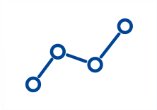

PackML Implementation Guide
Part 6: PackML HMIs - User Interfaces, Stacklights, and Push-Button Controls
Summary
[0001] This document – focusing on the design of Human-Machine Interfaces – constitutes Part 6 in the series of PackML Implementation Guidelines. Targeting the engineers responsible for machine design, the contents of this part will establish standards and best practices in the areas of interaction and interface design. Coverage offers concrete examples explaining the guidelines, as well as reference material for those seeking more in depth explanations of the associated concepts.
Author: Patrick Toohey, Mettler-Toledo Product Inspection
Contents
- 2. Executive Summary
- 3. Background
- 4. Stacklights and Control Push-Buttons
- 5. PackML State Diagram Representations
- 6. Navigation Design
- 7. Design Evaluation
- 8. Reference
- 9. Version History
Figures
- 2. Executive Summary
- 3. Background
-
4. Stacklights and Control Push-Buttons
- Figure 6: Standard PackML Diagram
- Figure 7: Summary Stacklight and Push-Button Standard
- Figure 8: Red and Green Lamp Sequences
- Figure 9: Complete State Lamp Sequence
- Figure 10: Suspend State Lamp Sequence
- Figure 11: Held State Lamp Sequence
- Figure 12: Potential Hold Lamp Sequence
- Figure 13: Standard Light Stack and Push-Buttons
-
5. PackML State Model Representations
- Figure 14: TR88-2021 PackML Diagram
- Figure 15: Proper State Model Alignment
- Figure 16: Displaying Pass-Through States
- Figure 17: Minimal Acceptable Alternative Display
- Figure 18: Extended Minimal Display Concept
- Figure 19: Data-Ink Ratio
- Figure 20: Type Size and Color
- Figure 21: Brightness – Black to White
- Figure 22: Saturation – Cyan to White
- Figure 23: Shades and Tones – Cyan
- Figure 24: Color Design Tools
- Figure 25: Shades and Tones – Applied
- Figure 26: PackML Diagram with Grey-Scale Background
- Figure 27: PackML Diagram with Borders Removed and New Typeface
- Figure 28: Active State Highlights Aligned with Stack Light Colors
- Figure 29: Active State Highlights Perceived with Protanopia-Type Color Blindness
- Figure 30: Active State Highlights Perceived with Deuteranopia-Type Color Blindness
- Figure 31: Typographic Scale Illustrated
- Figure 32: Typeface Alternatives
- Figure 33: Small Caps Illustrated
- Figure 34: Line Height Demonstrated
-
6. Navigation Design
- Figure 35: Example HMI
- Figure 36: Icon Styling
- Figure 37: Icon Orientation
- Figure 38: Example Machine View
- Figure 39: Home Icon Usage
- Figure 40: Example Product Setup Screen
- Figure 41: Product Icon Usage
- Figure 42: Example Statistics Screen
- Figure 43: Statistical Comparisons
- Figure 44: Statistics Icon Usage
- Figure 45: Example Alarms Screen
- Figure 46: Alarms Icon Usage
- Figure 47: Example Settings Screen
- Figure 48: Settings Icon Usage
- Figure 49: Example Diagnostics Screen
- Figure 50: Diagnostics Icon Usage
- Figure 51: Example Manual Screen
- Figure 52: Manual Icon Usage
- Figure 53: Horizontal Navigation Template
- Figure 54: Vertical Navigation Template
- Figure 55: Consumer Device Template
- Figure 56: Element Contrast
- Figure 57: Pair Contrast
- Figure 58: Consistency
- Figure 59: Element Size
- Figure 60: Squint Testing
- Figure 61: Atmospheric Perspective
- Figure 62: Emphasis
- Figure 63: Polarity
- Figure 64: Icon Ink
- Figure 65: Icon Evolution
- Figure 66: Icon Groups
- Figure 67: Alignment
- Figure 68: 12-Column Grid
- Figure 69: Grid Construction
- Figure 70: Grid Alignment
- Figure 71: Center and Right Grid Alignment
- Figure 72: Icon Column Pairing
- Figure 73: Icon Spanning
- Figure 74: Grid Consistency
- Figure 75: Screen Refactoring
- Figure 76: Screen Refactoring: Borders Removed
- Figure 77: White Space Grouping
- Figure 78: White Space Replaces Borders
- Figure 79: Irregular Alignment
- Figure 80: Improved Alignment
- Figure 81: Improved Proximity
- Figure 82: Top-Down Hierarchy
- Figure 83: Poor Legibility
Tables
2. Executive Summary
2.1 Purpose
[0002] It is generally accepted that production lines with widely varying HMI designs will suffer from reduced operator efficiency, which will likely lead to longer downtime events, lower throughput, and reduced job satisfaction. To help counter these issues, the following guidance will establish a set of Human-Machine Interface implementation standards that, when employed by production machinery designers, will establish the consistency necessary to accommodate the specific needs of the production-line operator.
[0003] In addition to the standards established in this document, the guidance will communicate a collection of more generic interface design best practices. We argue that the general level of usability within machine HMIs can always be improved. Accordingly, this document will provide guidance in the areas of usability and graphic design, which should benefit design engineers seeking to expand their background in those disciplines.
[0004] To accompany the recommendations offered throughout, this guideline presents a collection of reference material from which many of the best practices have been established. Readers are encouraged to explore these references, particularly those that fall outside the scope of their primary discipline. Throughout, an underlying theme will become evident; the designer is ultimately responsible for the success or failure of the operator. Put bluntly, the operator's inability to comprehend or effectively use an interface is the fault of the designer. Errors incurred due to flawed design are not the responsibility of the operator, but are instead, evidence of a failure on the part of the designer. It is our expectation that readers of this guidance are willing to accept that responsibility and do their best to optimize their operator's experience.
[0005] Success in the above endeavor, however, is not possible if designers work in isolation. Designers must collaborate with operators to understand their goals and the environment in which they work. Additionally, designers must collaborate with their peers to examine their work with a critical eye and to better understand successful designs and the underlying mechanisms that help achieve the desired outcome. The recommendations provided here advocate these additional steps, as they are essential to the development of optimally usable designs.
2.2 Goals
[0006] As stated previously, this guidance is targeted at designers for the benefit of operators. By improving the environment in which operators work, producers will ideally realize reductions in downtime, increased throughput, lower levels of rework, and operators with higher levels of job satisfaction. Moreover, standardization in specific areas of the human-machine interface should aid in the development of cross-functional production operators that can move from line to line with greater efficiency.
[0007] The best practices offered throughout are provided to encourage continuous improvement on the part of system designers. Our ability to effectively communicate with the operators through the equipment we design can always be improved. The provided guidance is simply a starting point for designers seeking additional exposure to the usability and graphic design disciplines. Proper application of the provided recommendations is ultimately dependent on the context in question; evaluating the resulting designs via operator testing is essential. Getting it right the first time is a lofty goal, but getting it right is paramount. With a greater understanding and ability to control the way operators experience the equipment, it is expected that the designers will likewise experience greater job satisfaction.
2.3 Guidance Structure
[0008] This executive summary concludes with section 2.4, which provides a complete, yet succinct, listing of the individual HMI standards (i.e., stacklights, state-model diagrams, and navigation systems). These "standard executive summaries" provide only those details necessary to comply with the requirements. The abbreviated versions are expanded in the later sections of the document, where more detailed explanations are paired with numerous examples to guide those responsible for the practical implementation of each topic.
[0009] Section 3 presents a brief review of key usability concepts and the related design principles. This background material establishes the foundation upon which the remainder of the guidance is built. Related topics include: (a) the important characteristics of the production operator, (b) the universally accepted characteristics of usability, and (c) a summary of the models that represent situation awareness and decision making.
[0010] Sections 4, 5, and 6 offer a detailed walk through each HMI standard, including supplemental content that is provided to explain the topics in terms of the established usability principles. For each standard, these sections offer (a) a fully annotated review of the standard itself, (b) supporting background content, and (c) related best practices. Those specifically interested in the stacklight design, for example, can focus exclusively on section 4.2, which presents the annotated standard. The remaining content in section 4 will then focus on the underlying usability principles and best practices that we feel to be most relevant for effective stacklight design. While we expect this usability content will be beneficial to all readers, it is understood that the core requirements of the standard specifications will likely take precedence in many instances.
[0011] Having fully explained the standards in sections 4 through 6, section 7 follows with recommendations on design evaluation and continuous improvement. Again, while this content will not include additional standards, it is offered for those seeking guidance on design refinement and validation.
2.4 Standard Executive Summaries
[0012] The following sections offer the base requirements for each standard. See sections 4 through 6 for additional descriptions and examples covering the respective standards.
2.4.1 Stacklights and Control Push-Buttons Abstract
[0013] The standard PackML stacklight features four colored lamps ordered red, amber, blue, and green. The standard state-lamp mappings – illustrated in Figure 1 – define whether each lamp will be off, solid, or flashing given the current machine state. A similar convention, also shown in the figure, is optionally applied to available horns and illuminated HMI push-buttons.
2.4.2 PackML State-Diagram Representations
[0014] Visual representations of the PackML state model must include the TR88-2021 model features while maintaining the alignment demonstrated in Figure 2. More specifically, the TR88-2021 state-model representations must include: (a) an Execute-Suspended boundary transitioning to Holding, (b) a Held-Execute-Suspended boundary transitioning to Completing, (c) a Completed state to replace Complete, and (d) a single grouped transition to the Execute state. Within this model, horizontal alignment is required for the following groupings: (a) Unholding, Held, Holding, (b) Idle, Starting, Execute, Completing, Completed, (c) Resetting, Unsuspending, Suspended, Suspending, and (d) Stopped, Stopping, Clearing, Aborted, Aborting. Vertical alignment is likewise required for the following groups: (a) Idle, Resetting, Stopped, (b) Unholding, Starting, Unsuspending, Stopping, (c) Held, Execute, Suspended, Clearing, (d) Holding, Completing, Suspending, Aborted, and (e) Completed, Aborting. Localization of the PackML state names is beyond the scope of this document.
[0015] While no specific color conventions are required, only the active state should be "highlighted". The figure demonstrates a color scheme where the active state (i.e., Execute) is colored to match the stacklight standard. This specific coloring scheme is not required. Additionally, any states that are not supported by the current mode (e.g., Completing, Completed) should be visible, but "greyed-out". If the host display is not large enough to present a properly aligned diagram, then the full diagram should not be shown (i.e., show only the current state name).
2.4.3 Navigation Design Abstract
[0016] The standard PackML Navigation Template requires a primary menu utilizing the icons and labels displayed in Table 1. Localization of the navigation labels is beyond the scope of this document.
| Label | Icon | Description | Example Content |
|---|---|---|---|
| Home | Top-level interface displaying summary data for the machine. | Equipment View, PackML State Model | |
| Products or Patterns | Settings used to specify the production process. Products is the preferred term, however, a machine-specific term like "Patterns" should be used when appropriate. | Product name, dimensions, product-specific machine settings. | |
| Statistics |  | General summary production statistics. | Good/Bad Counts, Throughput (parts / min), OEE |
| Settings | Non-product, device-specific, machine settings. | Sensor positions, encoder ratios, IP addresses | |
| Alarms | System alarms, warnings, and event displays. | OMAC Code, Description, Timestamps (e.g., occurrence, acknowledge), Stop Reason, Category | |
| Diagnostics | Troubleshooting tools and configuration aids. | Component status, digital I/O, drive diagnostics, low-level logs. | |
| Manual | Manual machine control interface. This context may be hidden, as it is not applicable for all machines. | Jog, rotate, vacuum, tamp, beacon, label |
[0017] Adornments to the basic icon forms (e.g., other shapes or borders), which may confuse the operator, should not be added. Likewise, alternate labels should not be used. If the display lacks sufficient space to display the standard label, the icon should be shown without a label.
[0018] A main menu, containing the standard icons, should be displayed either horizontally along the bottom edge of the screen, as shown in Figure 3, or vertically along the left edge, as shown in Figure 4. The icons must be displayed in the order presented Table 1 (i.e., Home, Products, Statistics, Settings, Alarms, Diagnostics, Manual). The Manual context is optional as it is not a functional requirement for all machine types.

[0019] At all times, a single icon should be uniquely highlighted to indicate which is the current navigation context. Home will be the default context on power up.

3. OMAC Member's Exclusive
We Hope You Enjoyed this Free Preview
The remainder of this document is available exclusively to OMAC members.